Descriptives
Daphne Janssen
Last compiled on 2022-10-21 18:24:07
1 Descriptives Computing science staff RU
1.1 Descriptives variables dataset
# start with clean workspace
rm(list = ls())
getwd()#> [1] "C:/Users/Daphn/Documenten/labjournal"# loading packages
library(tidyverse)# loading data
load("C:\\Users\\Daphn\\Documenten\\pubnets\\data\\names_df2_v20220106.RData")
load("C:\\Users\\Daphn\\Documenten\\pubnets\\data\\names_df_publications_v20221006.RData")# selecting the sociology sample
# wrong gs_id (just by eye-balling)
deselect <- c(24, 25, 34, 35)
names_df %>%
filter(affiliation == "Radboud University") %>%
filter(field == "sociology") %>%
filter(!(id %in% deselect)) -> soc_df
names_df_publications %>%
filter(gs_id %in% soc_df$gs_id) -> socpub_df
soc_df %>%
select(c("gs_id", "lastname")) %>%
right_join(socpub_df) -> socpub_df
rm(names_df)
rm(names_df_publications)
rm(deselect)# Cleaning the names a bit
soc_df$lastname_pubs <- as.character(str_split(soc_df$lastname, pattern = ",", n = 2, simplify = TRUE)[,
1])
socpub_df$author <- tolower(socpub_df$author)# Saving the data in a descriptives folder
save(soc_df, file = "C:\\Users\\Daphn\\Documenten\\labjournal\\data\\descriptives\\soc_df.RData")
save(socpub_df, file = "C:\\Users\\Daphn\\Documenten\\labjournal\\data\\descriptives\\socpub_df.RData")# Adding value labels to the variable 'dutch'
soc_df$dutch <- factor(soc_df$dutch, levels = c(0, 1), labels = c("non-dutch", "dutch"))# Frequencies of the variables 'dutch' and 'gender'
table(soc_df$gender)#>
#> female male
#> 16 16table(soc_df$dutch)#>
#> non-dutch dutch
#> 5 27# Visualisation of the gendercomposition of the three waves
library(ggplot2)
ggplot(soc_df, aes(factor(gender), fill = factor(gender))) + geom_bar()# Visualisation of the ethnicitycomposition of the three waves
library(ggplot2)
ggplot(soc_df, aes(factor(dutch), fill = factor(dutch))) + geom_bar()# Descriptives of 'gender' and 'dutch'
summary(soc_df$gender)#> Length Class Mode
#> 32 character charactersummary(soc_df$dutch)#> non-dutch dutch
#> 5 271.2 Array
1.2.1 Creating an array
# start with clean workspace
rm(list = ls())
getwd()#> [1] "C:/Users/Daphn/Documenten/labjournal"# loading packages
library(data.table)
library(tidyverse)
require(stringi)
require(RSiena)# loading data
load("C:\\Users\\Daphn\\Documenten\\labjournal\\data\\descriptives\\soc_df.RData")
load("C:\\Users\\Daphn\\Documenten\\labjournal\\data\\descriptives\\socpub_df.RData")# Network based on publications
network2016_2017 <- matrix(NA, nrow = nrow(soc_df), ncol = nrow(soc_df))
network2018_2019 <- matrix(NA, nrow = nrow(soc_df), ncol = nrow(soc_df))
network2020_2022 <- matrix(NA, nrow = nrow(soc_df), ncol = nrow(soc_df))# select publications of the corresponding time era
pubs_sel <- socpub_df %>%
filter(year >= 2016 & year <= 2017)
# fill the matrix
for (ego in 1:nrow(soc_df)) {
name_ego <- soc_df$lastname_pubs[ego] #which ego?
pubs_sel2 <- pubs_sel[pubs_sel$gs_id == soc_df$gs_id[ego], ] #selecteer de publicaties van ego
for (alter in 1:nrow(soc_df)) {
name_alter <- soc_df$last_name[alter] #which alter?
network2016_2017[ego, alter] <- as.numeric(sum(str_detect(pubs_sel2$author, name_alter)) > 1) #did alter publish with ego
}
}# select publications of the corresponding time era
pubs_sel <- socpub_df %>%
filter(year >= 2018 & year <= 2019)
# fill the matrix
for (ego in 1:nrow(soc_df)) {
name_ego <- soc_df$lastname_pubs[ego] #which ego?
pubs_sel2 <- pubs_sel[pubs_sel$gs_id == soc_df$gs_id[ego], ] #selecteer de publicaties van ego
for (alter in 1:nrow(soc_df)) {
name_alter <- soc_df$last_name[alter] #which alter?
network2018_2019[ego, alter] <- as.numeric(sum(str_detect(pubs_sel2$author, name_alter)) > 1) #did alter publish with ego
}
}# select publications of the corresponding time era
pubs_sel <- socpub_df %>%
filter(year >= 2020 & year <= 2022)
# fill the matrix
for (ego in 1:nrow(soc_df)) {
name_ego <- soc_df$lastname_pubs[ego] #which ego?
pubs_sel2 <- pubs_sel[pubs_sel$gs_id == soc_df$gs_id[ego], ] #selecteer de publicaties van ego
for (alter in 1:nrow(soc_df)) {
name_alter <- soc_df$last_name[alter] #which alter?
network2020_2022[ego, alter] <- as.numeric(sum(str_detect(pubs_sel2$author, name_alter)) > 1) #did alter publish with ego
}
}# Putting all adjacency matrices in an array
net_soc_array <- array(data = c(network2016_2017, network2018_2019, network2020_2022), dim = c(dim(network2020_2022),
3))# Saving the array
save(net_soc_array, file = "C:\\Users\\Daphn\\Documenten\\labjournal\\data\\descriptives\\soc_net_array.RData")1.2.2 Descriptives based on array
# Start with a clean workspace
rm(list = ls())
getwd()#> [1] "C:/Users/Daphn/Documenten/labjournal"# Loading packages
library(data.table)
library(tidyverse)
require(stringi)
require(RSiena)
require(igraph)# Loading dataobjects
load("C:\\Users\\Daphn\\Documenten\\labjournal\\data\\descriptives\\soc_net_array.RData")
load("C:\\Users\\Daphn\\Documenten\\labjournal\\data\\descriptives\\soc_df.RData")# Degrees in a histogram
net1 <- net_soc_array[, , 1]
diag(net1) <- 0
degree <- rowSums(net1)
hist(degree)net2 <- net_soc_array[, , 2]
diag(net2) <- 0
degree <- rowSums(net2)
hist(degree)net3 <- net_soc_array[, , 3]
diag(net3) <- 0
degree <- rowSums(net3)
hist(degree)# Correcting for publications which are not present for both authors
net1 <- net_soc_array[, , 1]
net1 <- net1 + t(net1)
net1[net1 == 2] <- 1
diag(net1) <- 0
degree <- rowSums(net1)
hist(degree)net2 <- net_soc_array[, , 2]
net2 <- net2 + t(net2)
net2[net2 == 2] <- 1
diag(net2) <- 0
degree <- rowSums(net2)
hist(degree)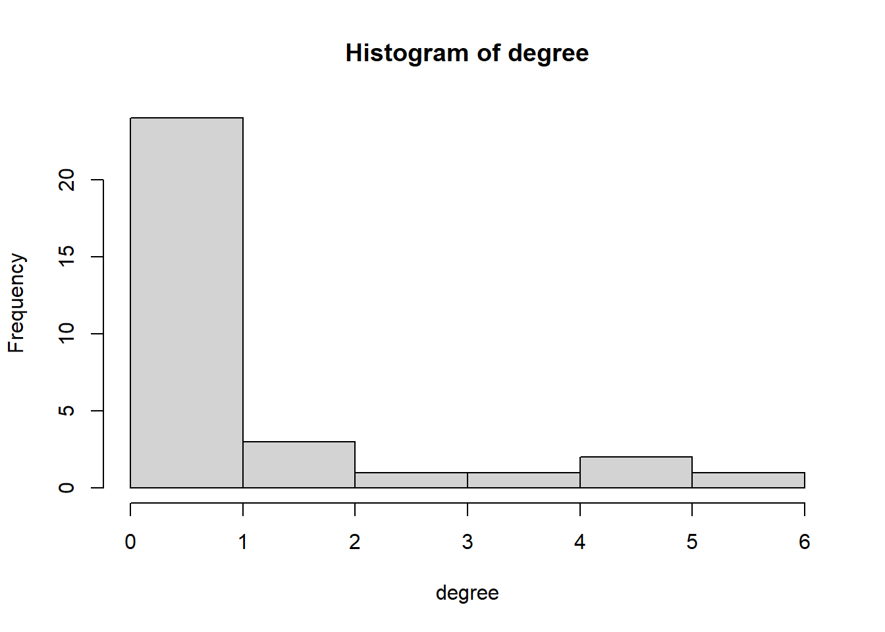
net3 <- net_soc_array[, , 3]
net3 <- net3 + t(net3)
net3[net3 == 2] <- 1
diag(net3) <- 0
degree <- rowSums(net3)
hist(degree)1.3 Plot
# Igraph object
net1_g <- igraph::graph_from_adjacency_matrix(net1, mode = c("undirected"))
plot(net1_g)igraph::degree(net1_g)#> [1] 0 0 0 0 0 0 4 0 0 0 1 0 0 7 2 1 2 0 3 2 3 4 0 0 0 0 0 0 0 1 0 0igraph::dyad.census(net1_g)#> $mut
#> [1] 15
#>
#> $asym
#> [1] 0
#>
#> $null
#> [1] 481igraph::triad.census(net1_g)#> [1] 4546 0 384 0 0 0 0 0 0 0 24 0 0 0 0 6igraph::edge_density(net1_g)#> [1] 0.03024194sum(igraph::degree(net1_g))#> [1] 30net2_g <- igraph::graph_from_adjacency_matrix(net2, mode = c("undirected"))
plot(net2_g)igraph::degree(net2_g)#> [1] 1 0 0 0 2 0 5 0 2 1 0 0 0 6 1 1 5 2 1 0 4 3 0 0 0 0 0 0 0 0 0 0igraph::dyad.census(net2_g)#> $mut
#> [1] 17
#>
#> $asym
#> [1] 0
#>
#> $null
#> [1] 479igraph::triad.census(net2_g)#> [1] 4492 0 431 0 0 0 0 0 0 0 32 0 0 0 0 5igraph::edge_density(net2_g)#> [1] 0.03427419sum(igraph::degree(net2_g))#> [1] 34net3_g <- igraph::graph_from_adjacency_matrix(net3, mode = c("undirected"))
plot(net3_g)igraph::degree(net3_g)#> [1] 0 0 0 0 2 0 6 1 1 0 0 0 0 6 2 3 5 6 3 4 2 2 2 0 0 2 2 4 3 0 0 0igraph::dyad.census(net3_g)#> $mut
#> [1] 28
#>
#> $asym
#> [1] 0
#>
#> $null
#> [1] 468igraph::triad.census(net3_g)#> [1] 4192 0 707 0 0 0 0 0 0 0 50 0 0 0 0 11igraph::edge_density(net3_g)#> [1] 0.05645161sum(igraph::degree(net3_g))#> [1] 561.3.1 Changing the plot to make it more insightful
# Making the size of the nodes proportinal to the betweenness score
V(net1_g)$size = betweenness(net1_g, normalized = T, directed = FALSE) * 60 + 10
plot(net1_g, mode = "undirected")V(net2_g)$size = betweenness(net2_g, normalized = T, directed = FALSE) * 60 + 10
plot(net2_g, mode = "undirected")V(net3_g)$size = betweenness(net3_g, normalized = T, directed = FALSE) * 60 + 10
plot(net3_g, mode = "undirected")# Putting the information of socnet1 into a dataframe
in_network <- data.frame(as_ids(V(net1_g)))
in_network <- data.frame(as_ids(V(net2_g)))
in_network <- data.frame(as_ids(V(net3_g)))
# Giving the first column the name 'number'
names(in_network)[1] <- "number"
# Creating the object 'ru_nodes' with the names and total cites of the sociology staffmembers
ru_nodes <- soc_df[, c("name", "total_cites")]
# Adding a new variable to the dataset ru_nodes, called 'number' representing the numbers of the
# nodes
ru_nodes$number <- c(1, 2, 3, 4, 5, 6, 7, 8, 9, 10, 11, 12, 13, 14, 15, 16, 17, 18, 19, 20, 21, 22, 23,
24, 25, 26, 27, 28, 29, 30, 31, 32)
# Combining in_network with ru_nodes, based on the numbers of the nodes
in_network <- left_join(in_network, ru_nodes, by = c(number = "number"))
in_network$vcol <- ifelse(is.na(in_network$total_cites), "#E69F00", "#56B4E9")
# Makig a plot with the color of the nodes defined by citation and the names of the sociology staff
# members
plot(net1_g, vertex.color = in_network$vcol, vertex.label = in_network$name)plot(net2_g, vertex.color = in_network$vcol, vertex.label = in_network$name)
plot(net3_g, vertex.color = in_network$vcol, vertex.label = in_network$name)# Defining the colors of the nodes by gender
soc_df$gcol <- ifelse(soc_df$gender == "male", "cyan4", "coral1")
plot(net1_g, vertex.color = soc_df$gcol, vertex.label = soc_df$name)plot(net2_g, vertex.color = soc_df$gcol, vertex.label = soc_df$name)plot(net3_g, vertex.color = soc_df$gcol, vertex.label = soc_df$name)# Making a few changes to the plot to make it more easy to derive information from it
plot(net1_g, vertex.color = soc_df$gcol, vertex.label = soc_df$name, vertex.size = 10, vertex.frame.color = "gray",
vertex.label.color = "black", vertex.label.family = "Helvetica", vertex.label.cex = 0.7, vertex.label.dist = 0.8,
edge.curved = 0.2, edge.arrow.size = 0.5)plot(net2_g, vertex.color = soc_df$gcol, vertex.label = soc_df$name, vertex.size = 10, vertex.frame.color = "gray",
vertex.label.color = "black", vertex.label.family = "Helvetica", vertex.label.cex = 0.7, vertex.label.dist = 0.8,
edge.curved = 0.2, edge.arrow.size = 0.5)plot(net3_g, vertex.color = soc_df$gcol, vertex.label = soc_df$name, vertex.size = 10, vertex.frame.color = "gray",
vertex.label.color = "black", vertex.label.family = "Helvetica", vertex.label.cex = 0.7, vertex.label.dist = 0.8,
edge.curved = 0.2, edge.arrow.size = 0.5)# Adapting the node size to the number of citations
in_network$total_cites <- as.numeric(in_network$total_cites)
plot(net1_g, vertex.color = soc_df$gcol, vertex.label = soc_df$name, vertex.size = ifelse(!is.na(in_network$total_cites),
log(in_network$total_cites), 2), vertex.frame.color = "gray", vertex.label.color = "black", vertex.label.family = "Helvetica",
vertex.label.cex = 0.7, vertex.label.dist = 0.8, edge.curved = 0.2, edge.arrow.size = 0.5)plot(net2_g, vertex.color = soc_df$gcol, vertex.label = soc_df$name, vertex.size = ifelse(!is.na(in_network$total_cites),
log(in_network$total_cites), 2), vertex.frame.color = "gray", vertex.label.color = "black", vertex.label.family = "Helvetica",
vertex.label.cex = 0.7, vertex.label.dist = 0.8, edge.curved = 0.2, edge.arrow.size = 0.5)plot(net3_g, vertex.color = soc_df$gcol, vertex.label = soc_df$name, vertex.size = ifelse(!is.na(in_network$total_cites),
log(in_network$total_cites), 2), vertex.frame.color = "gray", vertex.label.color = "black", vertex.label.family = "Helvetica",
vertex.label.cex = 0.7, vertex.label.dist = 0.8, edge.curved = 0.2, edge.arrow.size = 0.5)1.3.2 Other descriptives based on plot
# number of nodes: all networks consist of 36 nodes, or individuals.
vcount(net1_g)#> [1] 32vcount(net2_g)#> [1] 32vcount(net3_g)#> [1] 32# number of edges: the number of edges increases for each wave.
ecount(net1_g)#> [1] 15ecount(net2_g)#> [1] 17ecount(net3_g)#> [1] 28# transitivity: the number of nodes with a (high) transitivity index increases for each wave
transitivity(net1_g, type = c("localundirected"), isolates = c("NaN", "zero"))#> [1] NaN NaN NaN NaN NaN NaN 0.5000000 NaN NaN
#> [10] NaN NaN NaN NaN 0.2380952 1.0000000 NaN 0.0000000 NaN
#> [19] 0.3333333 1.0000000 1.0000000 0.6666667 NaN NaN NaN NaN NaN
#> [28] NaN NaN NaN NaN NaNtransitivity(net2_g, type = c("localundirected"), isolates = c("NaN", "zero"))#> [1] NaN NaN NaN NaN 1.00000000 NaN 0.40000000 NaN
#> [9] 1.00000000 NaN NaN NaN NaN 0.06666667 NaN NaN
#> [17] 0.20000000 1.00000000 NaN NaN 0.50000000 0.66666667 NaN NaN
#> [25] NaN NaN NaN NaN NaN NaN NaN NaNtransitivity(net3_g, type = c("localundirected"), isolates = c("NaN", "zero"))#> [1] NaN NaN NaN NaN 1.0000000 NaN 0.3333333 NaN NaN
#> [10] NaN NaN NaN NaN 0.2000000 1.0000000 0.6666667 0.5000000 0.2000000
#> [19] 0.3333333 0.3333333 1.0000000 1.0000000 1.0000000 NaN NaN 1.0000000 1.0000000
#> [28] 0.3333333 1.0000000 NaN NaN NaN# betweennessL the amount of nodes that act as bridges increases for each wave
igraph::betweenness(net1_g, directed = FALSE)#> [1] 0.0 0.0 0.0 0.0 0.0 0.0 9.0 0.0 0.0 0.0 0.0 0.0 0.0 27.5 0.0 0.0 9.0 0.0 16.0
#> [20] 0.0 0.0 4.5 0.0 0.0 0.0 0.0 0.0 0.0 0.0 0.0 0.0 0.0igraph::betweenness(net2_g, directed = FALSE)#> [1] 0.0 0.0 0.0 0.0 0.0 0.0 24.0 0.0 0.0 0.0 0.0 0.0 0.0 38.0 0.0 0.0 29.0 0.0 0.0
#> [20] 0.0 14.5 0.5 0.0 0.0 0.0 0.0 0.0 0.0 0.0 0.0 0.0 0.0igraph::betweenness(net3_g, directed = FALSE)#> [1] 0.00000 0.00000 0.00000 0.00000 0.00000 0.00000 32.33333 0.00000 0.00000 0.00000
#> [11] 0.00000 0.00000 0.00000 44.33333 0.00000 9.00000 24.33333 45.66667 25.50000 30.00000
#> [21] 0.00000 0.00000 0.00000 0.00000 0.00000 0.00000 0.00000 37.83333 0.00000 0.00000
#> [31] 0.00000 0.00000# global transitivity: the global transitivity increases from wave 1 to wave 2, and decreases from
# wave 2 to wave 3.
igraph::transitivity(net1_g, type = "global")#> [1] 0.4285714sna::gtrans(net1)#> [1] 0.4285714triad_net1 <- data.frame(sna::triad.census(net1))
transitivity_net1 <- (3 * triad_net1$X300)/(triad_net1$X201 + 3 * triad_net1$X300)
transitivity_net1#> [1] 0.4285714igraph::transitivity(net2_g, type = "global")#> [1] 0.3191489sna::gtrans(net2)#> [1] 0.3191489triad_net2 <- data.frame(sna::triad.census(net2))
transitivity_net2 <- (3 * triad_net2$X300)/(triad_net2$X201 + 3 * triad_net2$X300)
transitivity_net2#> [1] 0.3191489igraph::transitivity(net3_g, type = "global")#> [1] 0.3975904sna::gtrans(net3)#> [1] 0.3975904triad_net3 <- data.frame(sna::triad.census(net3))
transitivity_net3 <- (3 * triad_net3$X300)/(triad_net3$X201 + 3 * triad_net3$X300)
transitivity_net3#> [1] 0.3975904# Defining functions
# density: observed relations divided by possible relations
fdensity <- function(x) {
# x is your nomination network make sure diagonal cells are NA
diag(x) <- NA
# take care of RSiena structural zeros, set as missing.
x[x == 10] <- NA
sum(x == 1, na.rm = T)/(sum(x == 1 | x == 0, na.rm = T))
}
# calculate intragroup density
fdensityintra <- function(x, A) {
# A is matrix indicating whether nodes in dyad have same node attributes
diag(x) <- NA
x[x == 10] <- NA
diag(A) <- NA
sum(x == 1 & A == 1, na.rm = T)/(sum((x == 1 | x == 0) & A == 1, na.rm = T))
}
# calculate intergroup density
fdensityinter <- function(x, A) {
# A is matrix indicating whether nodes in dyad have same node attributes
diag(x) <- NA
x[x == 10] <- NA
diag(A) <- NA
sum(x == 1 & A != 1, na.rm = T)/(sum((x == 1 | x == 0) & A != 1, na.rm = T))
}
# construct dyadcharacteristic whether nodes are similar/homogenous
fhomomat <- function(x) {
# x is a vector of node-covariate
xmat <- matrix(x, nrow = length(x), ncol = length(x))
xmatt <- t(xmat)
xhomo <- xmat == xmatt
return(xhomo)
}fdensity(net1)#> [1] 0.03024194fdensity(net2)#> [1] 0.03427419fdensity(net3)#> [1] 0.05645161net_soc_array <- array(data = c(net1, net2, net3), dim = c(dim(net1), 3))1.4 Gender segregation
# Creating a matrix for the same gender
gender_m <- fhomomat(soc_df$gender)# Calculating intragroup density (binnen de groepen mannen/vrouwen)
fdensityintra(x = net1, A = gender_m)#> [1] 0.05fdensityintra(x = net2, A = gender_m)#> [1] 0.04583333fdensityintra(x = net3, A = gender_m)#> [1] 0.05833333# Calculating intergroup density
fdensityinter(x = net1, A = gender_m)#> [1] 0.01171875fdensityinter(x = net2, A = gender_m)#> [1] 0.0234375fdensityinter(x = net3, A = gender_m)#> [1] 0.0546875# Only selecting women
selectie <- soc_df$gender == "female"# Calculating the density for men and women seperately (intergroup density)
fdensity(net1[selectie, selectie])#> [1] 0.008333333fdensity(net2[selectie, selectie])#> [1] 0fdensity(net3[selectie, selectie])#> [1] 0.025fdensity(net1[!selectie, !selectie])#> [1] 0.09166667fdensity(net2[!selectie, !selectie])#> [1] 0.09166667fdensity(net3[!selectie, !selectie])#> [1] 0.09166667net1 == net2#> [,1] [,2] [,3] [,4] [,5] [,6] [,7] [,8] [,9] [,10] [,11] [,12] [,13] [,14] [,15] [,16]
#> [1,] TRUE TRUE TRUE TRUE TRUE TRUE TRUE TRUE TRUE TRUE TRUE TRUE TRUE FALSE TRUE TRUE
#> [2,] TRUE TRUE TRUE TRUE TRUE TRUE TRUE TRUE TRUE TRUE TRUE TRUE TRUE TRUE TRUE TRUE
#> [3,] TRUE TRUE TRUE TRUE TRUE TRUE TRUE TRUE TRUE TRUE TRUE TRUE TRUE TRUE TRUE TRUE
#> [4,] TRUE TRUE TRUE TRUE TRUE TRUE TRUE TRUE TRUE TRUE TRUE TRUE TRUE TRUE TRUE TRUE
#> [5,] TRUE TRUE TRUE TRUE TRUE TRUE FALSE TRUE TRUE TRUE TRUE TRUE TRUE TRUE TRUE TRUE
#> [6,] TRUE TRUE TRUE TRUE TRUE TRUE TRUE TRUE TRUE TRUE TRUE TRUE TRUE TRUE TRUE TRUE
#> [7,] TRUE TRUE TRUE TRUE FALSE TRUE TRUE TRUE TRUE TRUE TRUE TRUE TRUE TRUE TRUE TRUE
#> [8,] TRUE TRUE TRUE TRUE TRUE TRUE TRUE TRUE TRUE TRUE TRUE TRUE TRUE TRUE TRUE TRUE
#> [9,] TRUE TRUE TRUE TRUE TRUE TRUE TRUE TRUE TRUE TRUE TRUE TRUE TRUE TRUE TRUE TRUE
#> [10,] TRUE TRUE TRUE TRUE TRUE TRUE TRUE TRUE TRUE TRUE TRUE TRUE TRUE FALSE TRUE TRUE
#> [11,] TRUE TRUE TRUE TRUE TRUE TRUE TRUE TRUE TRUE TRUE TRUE TRUE TRUE FALSE TRUE TRUE
#> [12,] TRUE TRUE TRUE TRUE TRUE TRUE TRUE TRUE TRUE TRUE TRUE TRUE TRUE TRUE TRUE TRUE
#> [13,] TRUE TRUE TRUE TRUE TRUE TRUE TRUE TRUE TRUE TRUE TRUE TRUE TRUE TRUE TRUE TRUE
#> [14,] FALSE TRUE TRUE TRUE TRUE TRUE TRUE TRUE TRUE FALSE FALSE TRUE TRUE TRUE TRUE TRUE
#> [15,] TRUE TRUE TRUE TRUE TRUE TRUE TRUE TRUE TRUE TRUE TRUE TRUE TRUE TRUE TRUE TRUE
#> [16,] TRUE TRUE TRUE TRUE TRUE TRUE TRUE TRUE TRUE TRUE TRUE TRUE TRUE TRUE TRUE TRUE
#> [17,] TRUE TRUE TRUE TRUE TRUE TRUE FALSE TRUE FALSE TRUE TRUE TRUE TRUE TRUE TRUE TRUE
#> [18,] TRUE TRUE TRUE TRUE TRUE TRUE TRUE TRUE FALSE TRUE TRUE TRUE TRUE TRUE TRUE TRUE
#> [19,] TRUE TRUE TRUE TRUE TRUE TRUE TRUE TRUE TRUE TRUE TRUE TRUE TRUE TRUE TRUE TRUE
#> [20,] TRUE TRUE TRUE TRUE TRUE TRUE TRUE TRUE TRUE TRUE TRUE TRUE TRUE FALSE FALSE TRUE
#> [21,] TRUE TRUE TRUE TRUE TRUE TRUE TRUE TRUE TRUE TRUE TRUE TRUE TRUE TRUE TRUE TRUE
#> [22,] TRUE TRUE TRUE TRUE FALSE TRUE TRUE TRUE TRUE TRUE TRUE TRUE TRUE FALSE TRUE TRUE
#> [23,] TRUE TRUE TRUE TRUE TRUE TRUE TRUE TRUE TRUE TRUE TRUE TRUE TRUE TRUE TRUE TRUE
#> [24,] TRUE TRUE TRUE TRUE TRUE TRUE TRUE TRUE TRUE TRUE TRUE TRUE TRUE TRUE TRUE TRUE
#> [25,] TRUE TRUE TRUE TRUE TRUE TRUE TRUE TRUE TRUE TRUE TRUE TRUE TRUE TRUE TRUE TRUE
#> [26,] TRUE TRUE TRUE TRUE TRUE TRUE TRUE TRUE TRUE TRUE TRUE TRUE TRUE TRUE TRUE TRUE
#> [27,] TRUE TRUE TRUE TRUE TRUE TRUE TRUE TRUE TRUE TRUE TRUE TRUE TRUE TRUE TRUE TRUE
#> [28,] TRUE TRUE TRUE TRUE TRUE TRUE TRUE TRUE TRUE TRUE TRUE TRUE TRUE TRUE TRUE TRUE
#> [29,] TRUE TRUE TRUE TRUE TRUE TRUE TRUE TRUE TRUE TRUE TRUE TRUE TRUE TRUE TRUE TRUE
#> [30,] TRUE TRUE TRUE TRUE TRUE TRUE FALSE TRUE TRUE TRUE TRUE TRUE TRUE TRUE TRUE TRUE
#> [31,] TRUE TRUE TRUE TRUE TRUE TRUE TRUE TRUE TRUE TRUE TRUE TRUE TRUE TRUE TRUE TRUE
#> [32,] TRUE TRUE TRUE TRUE TRUE TRUE TRUE TRUE TRUE TRUE TRUE TRUE TRUE TRUE TRUE TRUE
#> [,17] [,18] [,19] [,20] [,21] [,22] [,23] [,24] [,25] [,26] [,27] [,28] [,29] [,30] [,31]
#> [1,] TRUE TRUE TRUE TRUE TRUE TRUE TRUE TRUE TRUE TRUE TRUE TRUE TRUE TRUE TRUE
#> [2,] TRUE TRUE TRUE TRUE TRUE TRUE TRUE TRUE TRUE TRUE TRUE TRUE TRUE TRUE TRUE
#> [3,] TRUE TRUE TRUE TRUE TRUE TRUE TRUE TRUE TRUE TRUE TRUE TRUE TRUE TRUE TRUE
#> [4,] TRUE TRUE TRUE TRUE TRUE TRUE TRUE TRUE TRUE TRUE TRUE TRUE TRUE TRUE TRUE
#> [5,] TRUE TRUE TRUE TRUE TRUE FALSE TRUE TRUE TRUE TRUE TRUE TRUE TRUE TRUE TRUE
#> [6,] TRUE TRUE TRUE TRUE TRUE TRUE TRUE TRUE TRUE TRUE TRUE TRUE TRUE TRUE TRUE
#> [7,] FALSE TRUE TRUE TRUE TRUE TRUE TRUE TRUE TRUE TRUE TRUE TRUE TRUE FALSE TRUE
#> [8,] TRUE TRUE TRUE TRUE TRUE TRUE TRUE TRUE TRUE TRUE TRUE TRUE TRUE TRUE TRUE
#> [9,] FALSE FALSE TRUE TRUE TRUE TRUE TRUE TRUE TRUE TRUE TRUE TRUE TRUE TRUE TRUE
#> [10,] TRUE TRUE TRUE TRUE TRUE TRUE TRUE TRUE TRUE TRUE TRUE TRUE TRUE TRUE TRUE
#> [11,] TRUE TRUE TRUE TRUE TRUE TRUE TRUE TRUE TRUE TRUE TRUE TRUE TRUE TRUE TRUE
#> [12,] TRUE TRUE TRUE TRUE TRUE TRUE TRUE TRUE TRUE TRUE TRUE TRUE TRUE TRUE TRUE
#> [13,] TRUE TRUE TRUE TRUE TRUE TRUE TRUE TRUE TRUE TRUE TRUE TRUE TRUE TRUE TRUE
#> [14,] TRUE TRUE TRUE FALSE TRUE FALSE TRUE TRUE TRUE TRUE TRUE TRUE TRUE TRUE TRUE
#> [15,] TRUE TRUE TRUE FALSE TRUE TRUE TRUE TRUE TRUE TRUE TRUE TRUE TRUE TRUE TRUE
#> [16,] TRUE TRUE TRUE TRUE TRUE TRUE TRUE TRUE TRUE TRUE TRUE TRUE TRUE TRUE TRUE
#> [17,] TRUE FALSE FALSE TRUE FALSE TRUE TRUE TRUE TRUE TRUE TRUE TRUE TRUE TRUE TRUE
#> [18,] FALSE TRUE TRUE TRUE TRUE TRUE TRUE TRUE TRUE TRUE TRUE TRUE TRUE TRUE TRUE
#> [19,] FALSE TRUE TRUE TRUE TRUE FALSE TRUE TRUE TRUE TRUE TRUE TRUE TRUE TRUE TRUE
#> [20,] TRUE TRUE TRUE TRUE TRUE TRUE TRUE TRUE TRUE TRUE TRUE TRUE TRUE TRUE TRUE
#> [21,] FALSE TRUE TRUE TRUE TRUE TRUE TRUE TRUE TRUE TRUE TRUE TRUE TRUE TRUE TRUE
#> [22,] TRUE TRUE FALSE TRUE TRUE TRUE TRUE TRUE TRUE TRUE TRUE TRUE TRUE TRUE TRUE
#> [23,] TRUE TRUE TRUE TRUE TRUE TRUE TRUE TRUE TRUE TRUE TRUE TRUE TRUE TRUE TRUE
#> [24,] TRUE TRUE TRUE TRUE TRUE TRUE TRUE TRUE TRUE TRUE TRUE TRUE TRUE TRUE TRUE
#> [25,] TRUE TRUE TRUE TRUE TRUE TRUE TRUE TRUE TRUE TRUE TRUE TRUE TRUE TRUE TRUE
#> [26,] TRUE TRUE TRUE TRUE TRUE TRUE TRUE TRUE TRUE TRUE TRUE TRUE TRUE TRUE TRUE
#> [27,] TRUE TRUE TRUE TRUE TRUE TRUE TRUE TRUE TRUE TRUE TRUE TRUE TRUE TRUE TRUE
#> [28,] TRUE TRUE TRUE TRUE TRUE TRUE TRUE TRUE TRUE TRUE TRUE TRUE TRUE TRUE TRUE
#> [29,] TRUE TRUE TRUE TRUE TRUE TRUE TRUE TRUE TRUE TRUE TRUE TRUE TRUE TRUE TRUE
#> [30,] TRUE TRUE TRUE TRUE TRUE TRUE TRUE TRUE TRUE TRUE TRUE TRUE TRUE TRUE TRUE
#> [31,] TRUE TRUE TRUE TRUE TRUE TRUE TRUE TRUE TRUE TRUE TRUE TRUE TRUE TRUE TRUE
#> [32,] TRUE TRUE TRUE TRUE TRUE TRUE TRUE TRUE TRUE TRUE TRUE TRUE TRUE TRUE TRUE
#> [,32]
#> [1,] TRUE
#> [2,] TRUE
#> [3,] TRUE
#> [4,] TRUE
#> [5,] TRUE
#> [6,] TRUE
#> [7,] TRUE
#> [8,] TRUE
#> [9,] TRUE
#> [10,] TRUE
#> [11,] TRUE
#> [12,] TRUE
#> [13,] TRUE
#> [14,] TRUE
#> [15,] TRUE
#> [16,] TRUE
#> [17,] TRUE
#> [18,] TRUE
#> [19,] TRUE
#> [20,] TRUE
#> [21,] TRUE
#> [22,] TRUE
#> [23,] TRUE
#> [24,] TRUE
#> [25,] TRUE
#> [26,] TRUE
#> [27,] TRUE
#> [28,] TRUE
#> [29,] TRUE
#> [30,] TRUE
#> [31,] TRUE
#> [32,] TRUE2 Descriptives Computing science staff RU
2.1 Descriptives variables dataset
# start with clean workspace
rm(list = ls())
getwd()#> [1] "C:/Users/Daphn/Documenten/labjournal"# loading packages
library(tidyverse)# loading data
load("C:\\Users\\Daphn\\Documenten\\pubnets\\data\\names_df2_v20220106.RData")
load("C:\\Users\\Daphn\\Documenten\\pubnets\\data\\names_df_publications_v20221006.RData")# selecting the computer science sample
# wrong gs_id (just by eye-balling)
deselect <- c(52, 95)
names_df %>%
filter(affiliation == "Radboud University") %>%
filter(field == "computer science") %>%
filter(!(id %in% deselect)) -> comp_df
names_df_publications %>%
filter(gs_id %in% comp_df$gs_id) -> comppub_df
comp_df %>%
select(c("gs_id", "lastname")) %>%
right_join(comppub_df) -> comppub_df
rm(names_df)
rm(names_df_publications)# Assigning the respondents with a missing on the variable gender the value 'female' (based on the
# photo on their google scholar page)
comp_df$gender[59] <- "female"
comp_df$gender[106] <- "female"# This crosstable shows to what extend the variables 'gender' and 'gender2' have comparable
# results. 7/113*100 = 93.8 percent.
# TO DO: BETER OPSCHRIJVEN! 93.8 procent is hoog, dus dat zit goed. Maar we geven de Nederlande
# variabele de voorkeur en vullen daarom de NA's in door het geslacht op te zoeken, i.p.v. het in
# te vullen met de internationale variabele.
# install.packages('crosstable')
require(crosstable)
crosstable(comp_df, gender, by = gender2)#> # A tibble: 2 × 6
#> .id label variable female male `NA`
#> <chr> <chr> <chr> <chr> <chr> <chr>
#> 1 gender gender female 27 (79.41%) 7 (20.59%) 1
#> 2 gender gender male 0 (0%) 78 (100.00%) 0# Cleaning the names a bit
comp_df$lastname_pubs <- as.character(str_split(comp_df$lastname, pattern = ",", n = 2, simplify = TRUE)[,
1])
comppub_df$author <- tolower(comppub_df$author)# Saving the data in a descriptives folder
save(comp_df, file = "C:\\Users\\Daphn\\Documenten\\labjournal\\data\\descriptives\\comp_df.RData")
save(comppub_df, file = "C:\\Users\\Daphn\\Documenten\\labjournal\\data\\descriptives\\comppub_df.RData")# Adding value labels to the variable 'dutch'
comp_df$dutch <- factor(comp_df$dutch, levels = c(0, 1), labels = c("non-dutch", "dutch"))# Frequencies of the variables 'dutch' and 'gender'
table(comp_df$gender)#>
#> female male
#> 35 78table(comp_df$dutch)#>
#> non-dutch dutch
#> 28 85# Visualisation of the gendercomposition of the three waves
library(ggplot2)
ggplot(comp_df, aes(factor(gender), fill = factor(gender))) + geom_bar()# Visualisation of the ethnicitycomposition of the three waves
library(ggplot2)
ggplot(comp_df, aes(factor(dutch), fill = factor(dutch))) + geom_bar()# Descriptives of 'gender' and 'dutch'
summary(comp_df$gender)#> Length Class Mode
#> 113 character charactersummary(comp_df$dutch)#> non-dutch dutch
#> 28 852.2 Array
2.2.1 Creating an array
# start with clean workspace
rm(list = ls())
getwd()#> [1] "C:/Users/Daphn/Documenten/labjournal"# loading packages
library(data.table)
library(tidyverse)
require(stringi)
require(RSiena)# loading data
load("C:\\Users\\Daphn\\Documenten\\labjournal\\data\\descriptives\\comp_df.RData")
load("C:\\Users\\Daphn\\Documenten\\labjournal\\data\\descriptives\\comppub_df.RData")# Network based on publications
network2016_2017 <- matrix(NA, nrow = nrow(comp_df), ncol = nrow(comp_df))
network2018_2019 <- matrix(NA, nrow = nrow(comp_df), ncol = nrow(comp_df))
network2020_2022 <- matrix(NA, nrow = nrow(comp_df), ncol = nrow(comp_df))# select publications of the corresponding time era
pubs_sel <- comppub_df %>%
filter(year >= 2016 & year <= 2017)
# fill the matrix
for (ego in 1:nrow(comp_df)) {
name_ego <- comp_df$lastname_pubs[ego] #which ego?
pubs_sel2 <- pubs_sel[pubs_sel$gs_id == comp_df$gs_id[ego], ] #selecteer de publicaties van ego
for (alter in 1:nrow(comp_df)) {
name_alter <- comp_df$last_name[alter] #which alter?
network2016_2017[ego, alter] <- as.numeric(sum(str_detect(pubs_sel2$author, name_alter)) > 1) #did alter publish with ego
}
}# select publications of the corresponding time era
pubs_sel <- comppub_df %>%
filter(year >= 2018 & year <= 2019)
# fill the matrix
for (ego in 1:nrow(comp_df)) {
name_ego <- comp_df$lastname_pubs[ego] #which ego?
pubs_sel2 <- pubs_sel[pubs_sel$gs_id == comp_df$gs_id[ego], ] #selecteer de publicaties van ego
for (alter in 1:nrow(comp_df)) {
name_alter <- comp_df$last_name[alter] #which alter?
network2018_2019[ego, alter] <- as.numeric(sum(str_detect(pubs_sel2$author, name_alter)) > 1) #did alter publish with ego
}
}# select publications of the corresponding time era
pubs_sel <- comppub_df %>%
filter(year >= 2020 & year <= 2022)
# fill the matrix
for (ego in 1:nrow(comp_df)) {
name_ego <- comp_df$lastname_pubs[ego] #which ego?
pubs_sel2 <- pubs_sel[pubs_sel$gs_id == comp_df$gs_id[ego], ] #selecteer de publicaties van ego
for (alter in 1:nrow(comp_df)) {
name_alter <- comp_df$last_name[alter] #which alter?
network2020_2022[ego, alter] <- as.numeric(sum(str_detect(pubs_sel2$author, name_alter)) > 1) #did alter publish with ego
}
}# Putting all adjacency matrices in an array
net_comp_array <- array(data = c(network2016_2017, network2018_2019, network2020_2022), dim = c(dim(network2020_2022),
3))# Saving the array
save(net_comp_array, file = "C:\\Users\\Daphn\\Documenten\\labjournal\\data\\descriptives\\comp_net_array.RData")2.2.2 Descriptives based on array
# Loading packages
library(data.table)
library(tidyverse)
require(stringi)
require(RSiena)
require(igraph)# Degrees in a histogram
compnet1 <- net_comp_array[, , 1]
diag(compnet1) <- 0
degree <- rowSums(compnet1)
hist(degree)compnet2 <- net_comp_array[, , 2]
diag(compnet2) <- 0
degree <- rowSums(compnet2)
hist(degree)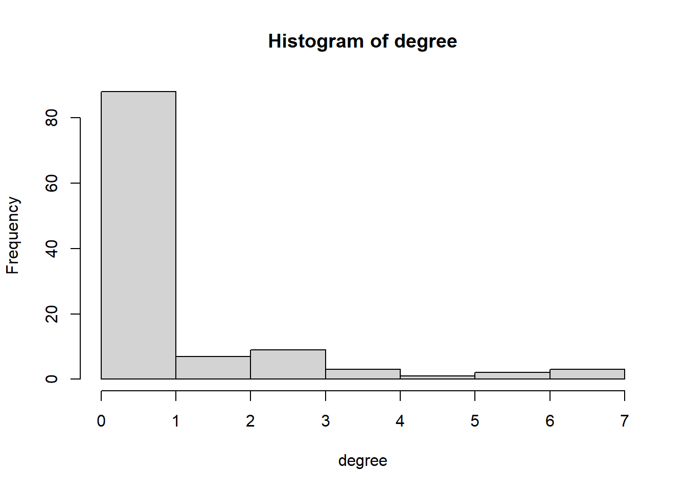
compnet3 <- net_comp_array[, , 3]
diag(compnet3) <- 0
degree <- rowSums(compnet3)
hist(degree)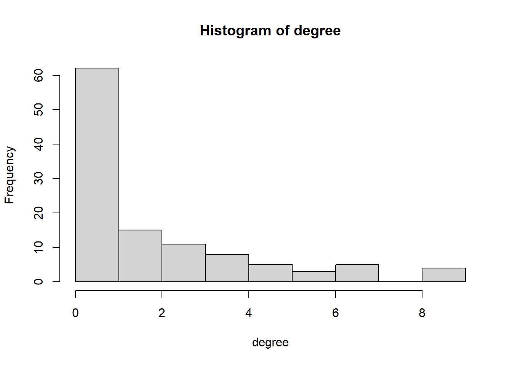
# Correcting for publications which are not present for both authors
compnet1 <- net_comp_array[, , 1]
compnet1 <- compnet1 + t(compnet1)
compnet1[compnet1 == 2] <- 1
diag(compnet1) <- 0
degree <- rowSums(compnet1)
hist(degree)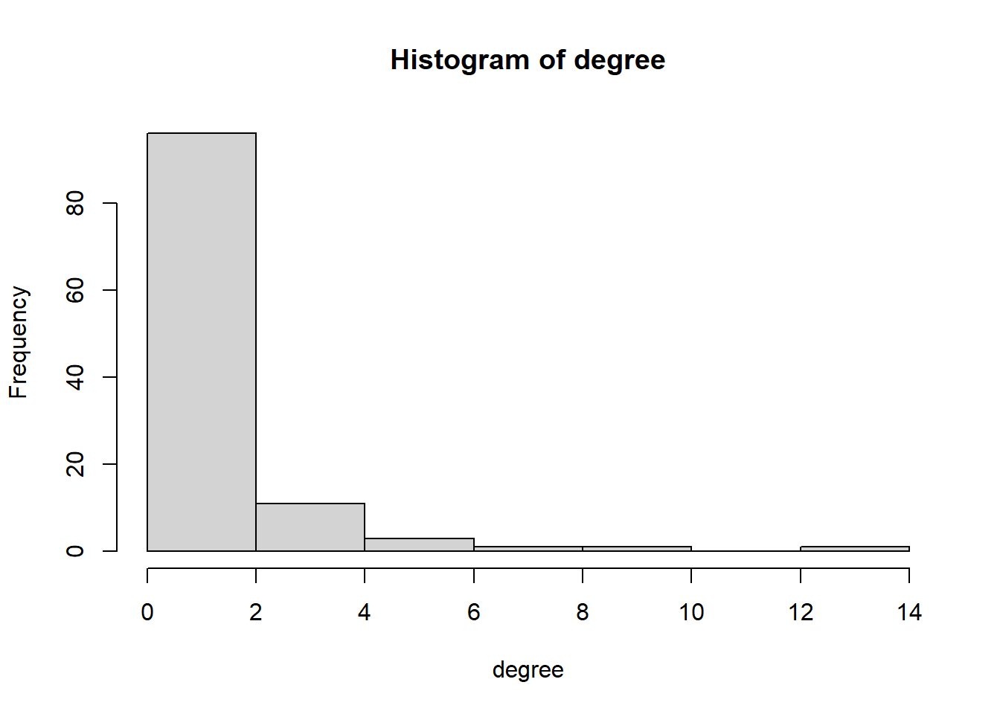
compnet2 <- net_comp_array[, , 2]
compnet2 <- compnet2 + t(compnet2)
compnet2[compnet2 == 2] <- 1
diag(compnet2) <- 0
degree <- rowSums(compnet2)
hist(degree)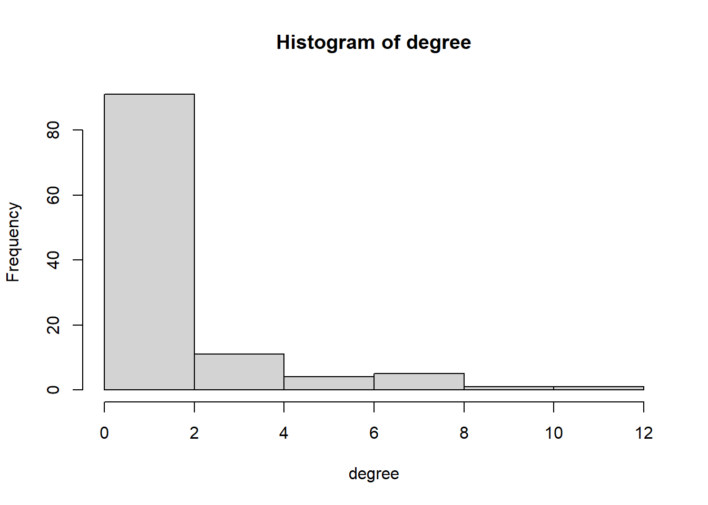
compnet3 <- net_comp_array[, , 3]
compnet3 <- compnet3 + t(compnet3)
compnet3[compnet3 == 2] <- 1
diag(compnet3) <- 0
degree <- rowSums(compnet3)
hist(degree)2.3 Plot
# Igraph object
compnet1_g <- igraph::graph_from_adjacency_matrix(compnet1, mode = c("undirected"))
plot(compnet1_g)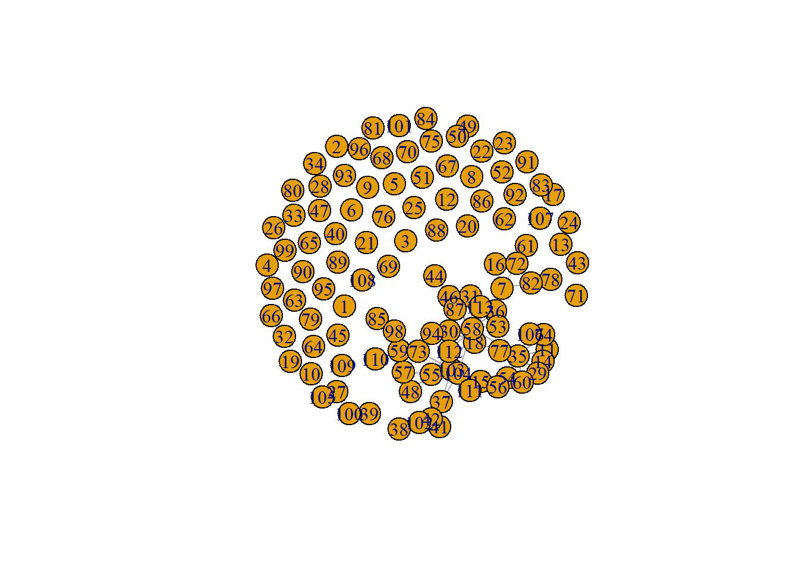
igraph::degree(compnet1_g)#> [1] 0 0 0 0 0 0 4 0 0 0 2 0 0 3 2 1 1 3 0 0 0 0 0 0 0 0 1 0 2 2 1
#> [32] 0 0 0 10 1 5 1 0 0 3 3 0 1 0 3 0 1 1 1 0 0 1 3 5 2 2 13 3 2 1 0
#> [63] 0 0 0 0 0 0 0 0 0 2 2 1 0 0 2 1 0 0 0 2 1 0 1 0 2 0 0 0 0 0 0
#> [94] 3 0 0 0 2 0 0 0 4 7 5 1 1 0 0 0 1 3 2 1igraph::dyad.census(compnet1_g)#> $mut
#> [1] 64
#>
#> $asym
#> [1] 0
#>
#> $null
#> [1] 6264igraph::triad.census(compnet1_g)#> [1] 227247 0 6686 0 0 0 0 0 0 0 191 0 0
#> [14] 0 0 12igraph::edge_density(compnet1_g)#> [1] 0.01011378sum(igraph::degree(compnet1_g))#> [1] 128compnet2_g <- igraph::graph_from_adjacency_matrix(compnet2, mode = c("undirected"))
plot(compnet2_g)igraph::degree(compnet2_g)#> [1] 0 0 0 0 0 0 6 0 0 1 5 0 2 5 0 4 1 3 0 0 0 0 0 0 0 2 2 1 4 1 0
#> [32] 3 0 0 7 3 1 1 0 0 2 2 0 4 1 1 3 0 1 1 0 0 0 3 7 0 2 10 5 7 1 0
#> [63] 1 0 0 1 0 0 0 1 1 2 2 4 0 0 12 1 0 2 0 2 1 2 1 0 4 2 0 0 0 2 1
#> [94] 3 0 0 0 1 0 0 0 0 8 8 1 1 0 0 1 1 0 2 0igraph::dyad.census(compnet2_g)#> $mut
#> [1] 85
#>
#> $asym
#> [1] 0
#>
#> $null
#> [1] 6243igraph::triad.census(compnet2_g)#> [1] 225016 0 8827 0 0 0 0 0 0 0 271 0 0
#> [14] 0 0 22igraph::edge_density(compnet2_g)#> [1] 0.01343236sum(igraph::degree(compnet2_g))#> [1] 170compnet3_g <- igraph::graph_from_adjacency_matrix(compnet3, mode = c("undirected"))
plot(compnet3_g)igraph::degree(compnet3_g)#> [1] 0 2 1 3 0 4 8 0 0 0 4 4 4 5 0 7 1 5 5 0 0 0 0 3 3 4 2 0 5 3 1
#> [32] 7 1 0 9 9 0 0 0 1 4 4 0 8 0 3 6 0 2 4 2 4 0 7 10 5 5 22 11 8 1 0
#> [63] 2 4 2 2 0 1 0 0 4 7 3 6 0 1 9 2 0 2 3 3 1 1 0 0 5 1 1 1 1 9 0
#> [94] 5 0 1 3 4 3 3 0 0 9 10 0 1 0 0 1 4 3 5 2igraph::dyad.census(compnet3_g)#> $mut
#> [1] 166
#>
#> $asym
#> [1] 0
#>
#> $null
#> [1] 6162igraph::triad.census(compnet3_g)#> [1] 216582 0 16778 0 0 0 0 0 0 0 680 0 0
#> [14] 0 0 96igraph::edge_density(compnet3_g)#> [1] 0.02623262sum(igraph::degree(compnet3_g))#> [1] 3322.3.1 Changing the plot to make it more insightful
# Making the size of the nodes proportinal to the betweenness score
V(compnet1_g)$size = betweenness(compnet1_g, normalized = T, directed = FALSE) * 60 + 10
plot(compnet1_g, mode = "undirected")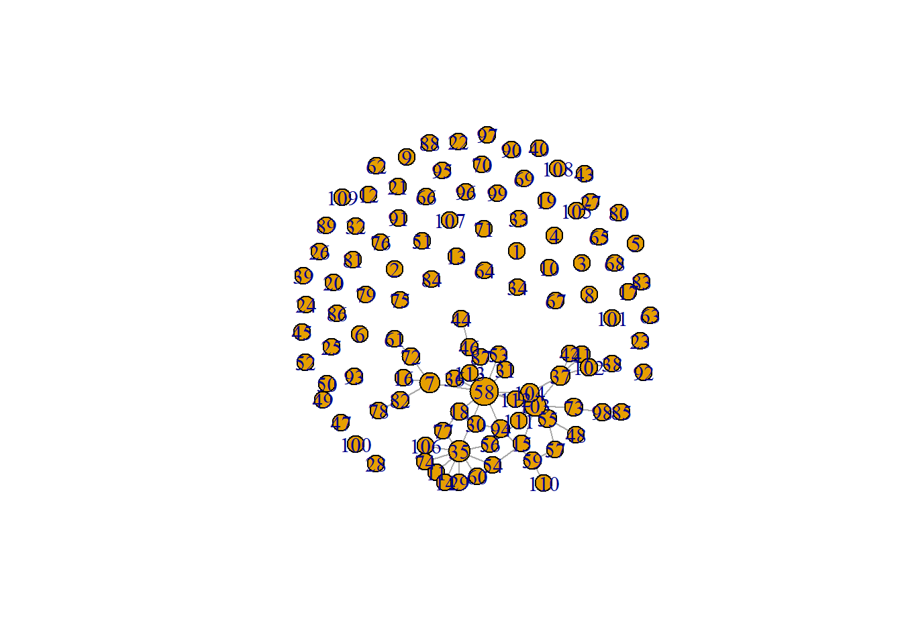
V(compnet2_g)$size = betweenness(compnet2_g, normalized = T, directed = FALSE) * 60 + 10
plot(compnet2_g, mode = "undirected")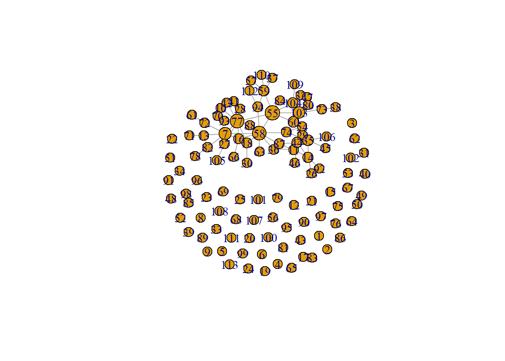
V(compnet3_g)$size = betweenness(compnet3_g, normalized = T, directed = FALSE) * 60 + 10
plot(compnet3_g, mode = "undirected")# Putting the information of soccompnet1 into a dataframe
in_network <- data.frame(as_ids(V(compnet1_g)))
in_network <- data.frame(as_ids(V(compnet2_g)))
in_network <- data.frame(as_ids(V(compnet3_g)))
# Giving the first column the name 'number'
names(in_network)[1] <- "number"
# Creating the object 'ru_nodes' with the names and total cites of the sociology staffmembers
ru_nodes <- comp_df[, c("name", "total_cites")]
# Adding a new variable to the dataset ru_nodes, called 'number' representing the numbers of the
# nodes ru_nodes$number <- c(1, 2, 3, 4, 5, 6, 7, 8, 9, 10, 11, 12, 13, 14, 15, 16, 17, 18, 19, 20,
# 21, 22, 23, 24, 25, 26, 27, 28, 29, 30, 31, 32, 33, 34, 35, 36, 37, 38, 39, 40, 41, 42, 43, 44,
# 45, 46, 47, 48, 49, 50, 51, 52, 53, 54, 55, 56, 57, 58, 59, 60,
# 61,\t62,\t63,\t64,\t65,\t66,\t67,\t68,\t69, 70,\t71,\t72,\t73, 74,\t75,\t76,\t77,\t78,\t79,
# 80,\t81,\t82,\t83,\t84,\t85,\t86,\t87,\t88,\t89, 90,\t91,\t92,\t93,\t94,\t95,\t96,\t97,\t98,\t99,
# 100, 101,\t102, 103,\t104,\t105,\t106,\t107,\t108,\t109, 110,\t111,\t112,\t113)
ru_nodes$number <- c(1:113)
# Combining in_network with ru_nodes, based on the numbers of the nodes
in_network <- left_join(in_network, ru_nodes, by = c(number = "number"))
in_network$vcol <- ifelse(is.na(in_network$total_cites), "#E69F00", "#56B4E9")
# Makig a plot with the color of the nodes defined by citation and the names of the sociology staff
# members
plot(compnet1_g, vertex.color = in_network$vcol, vertex.label = in_network$name)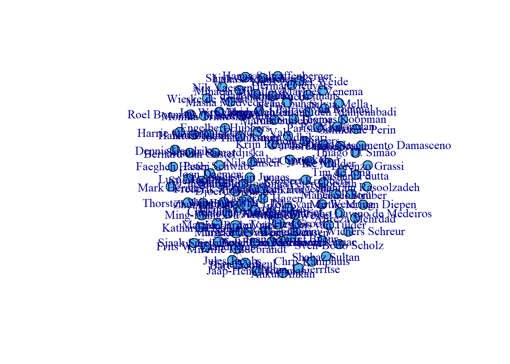
plot(compnet2_g, vertex.color = in_network$vcol, vertex.label = in_network$name)plot(compnet3_g, vertex.color = in_network$vcol, vertex.label = in_network$name)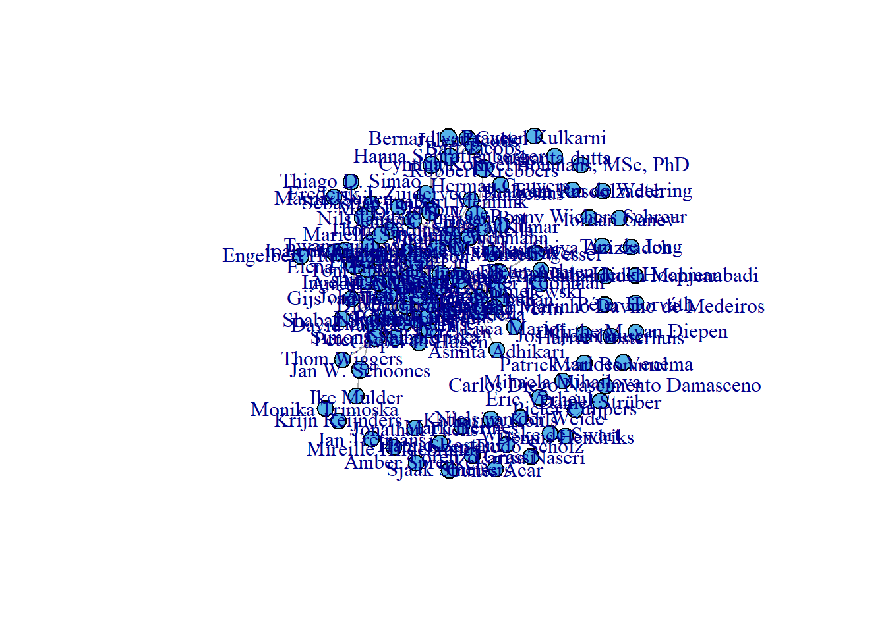
# Defining the colors of the nodes by gender
comp_df$gcol <- ifelse(comp_df$gender == "male", "cyan4", "coral1")
plot(compnet1_g, vertex.color = comp_df$gcol, vertex.label = comp_df$name)plot(compnet2_g, vertex.color = comp_df$gcol, vertex.label = comp_df$name)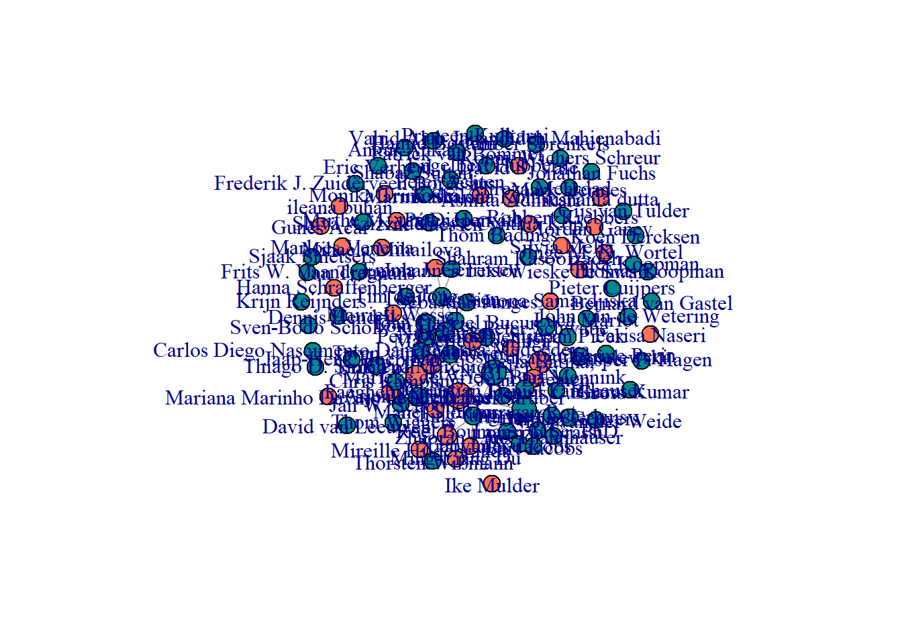
plot(compnet3_g, vertex.color = comp_df$gcol, vertex.label = comp_df$name)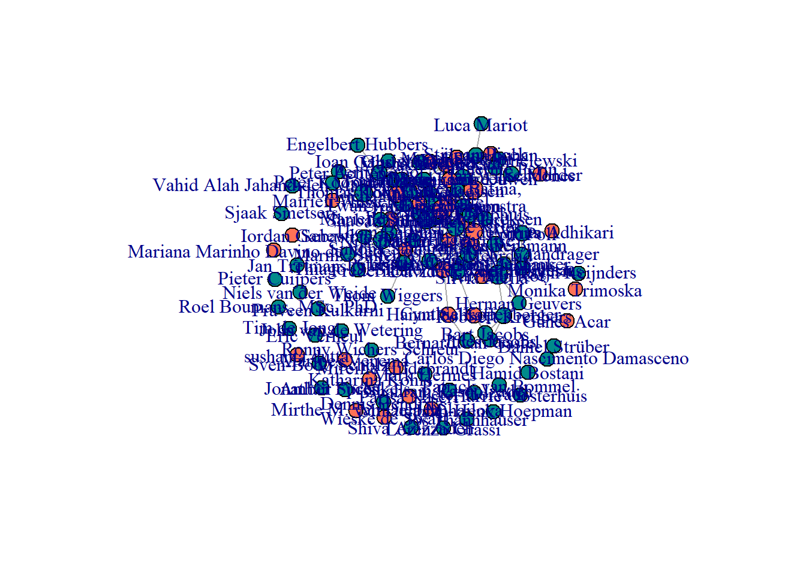
# Making a few changes to the plot to make it more easy to derive information from it
plot(compnet1_g, vertex.color = comp_df$gcol, vertex.label = comp_df$name, vertex.size = 10, vertex.frame.color = "gray",
vertex.label.color = "black", vertex.label.family = "Helvetica", vertex.label.cex = 0.7, vertex.label.dist = 0.8,
edge.curved = 0.2, edge.arrow.size = 25)plot(compnet2_g, vertex.color = comp_df$gcol, vertex.label = comp_df$name, vertex.size = 10, vertex.frame.color = "gray",
vertex.label.color = "black", vertex.label.family = "Helvetica", vertex.label.cex = 0.7, vertex.label.dist = 0.8,
edge.curved = 0.2, edge.arrow.size = 0.5)plot(compnet3_g, vertex.color = comp_df$gcol, vertex.label = comp_df$name, vertex.size = 10, vertex.frame.color = "gray",
vertex.label.color = "black", vertex.label.family = "Helvetica", vertex.label.cex = 0.7, vertex.label.dist = 0.8,
edge.curved = 0.2, edge.arrow.size = 0.5)# Adapting the node size to the number of citations
in_network$total_cites <- as.numeric(in_network$total_cites)
plot(compnet1_g, vertex.color = comp_df$gcol, vertex.label = comp_df$name, vertex.size = ifelse(!is.na(in_network$total_cites),
log(in_network$total_cites), 2), vertex.frame.color = "gray", vertex.label.color = "black", vertex.label.family = "Helvetica",
vertex.label.cex = 0.7, vertex.label.dist = 0.8, edge.curved = 0.2, edge.arrow.size = 0.5)plot(compnet2_g, vertex.color = comp_df$gcol, vertex.label = comp_df$name, vertex.size = ifelse(!is.na(in_network$total_cites),
log(in_network$total_cites), 2), vertex.frame.color = "gray", vertex.label.color = "black", vertex.label.family = "Helvetica",
vertex.label.cex = 0.7, vertex.label.dist = 0.8, edge.curved = 0.2, edge.arrow.size = 0.5)plot(compnet3_g, vertex.color = comp_df$gcol, vertex.label = comp_df$name, vertex.size = ifelse(!is.na(in_network$total_cites),
log(in_network$total_cites), 2), vertex.frame.color = "gray", vertex.label.color = "black", vertex.label.family = "Helvetica",
vertex.label.cex = 0.7, vertex.label.dist = 0.8, edge.curved = 0.2, edge.arrow.size = 0.5)2.3.2 Other descriptives based on plot
# number of nodes: all networks consist of 115 nodes, or individuals.
vcount(compnet1_g)#> [1] 113vcount(compnet2_g)#> [1] 113vcount(compnet3_g)#> [1] 113# number of edges: the number of edges increases for each wave.
ecount(compnet1_g)#> [1] 64ecount(compnet2_g)#> [1] 85ecount(compnet3_g)#> [1] 166# transitivity: the number of nodes with a (high) transitivity index increases for each wave
transitivity(compnet1_g, type = c("localundirected"), isolates = c("NaN", "zero"))#> [1] NaN NaN NaN NaN NaN NaN 0.00000000 NaN
#> [9] NaN NaN 1.00000000 NaN NaN 0.66666667 0.00000000 NaN
#> [17] NaN 0.00000000 NaN NaN NaN NaN NaN NaN
#> [25] NaN NaN NaN NaN 1.00000000 0.00000000 NaN NaN
#> [33] NaN NaN 0.06666667 NaN 0.40000000 NaN NaN NaN
#> [41] 1.00000000 1.00000000 NaN NaN NaN 0.33333333 NaN NaN
#> [49] NaN NaN NaN NaN NaN 0.33333333 0.10000000 0.00000000
#> [57] 0.00000000 0.02564103 0.00000000 1.00000000 NaN NaN NaN NaN
#> [65] NaN NaN NaN NaN NaN NaN NaN 0.00000000
#> [73] 0.00000000 NaN NaN NaN 0.00000000 NaN NaN NaN
#> [81] NaN 0.00000000 NaN NaN NaN NaN 1.00000000 NaN
#> [89] NaN NaN NaN NaN NaN 0.00000000 NaN NaN
#> [97] NaN 0.00000000 NaN NaN NaN 0.50000000 0.19047619 0.40000000
#> [105] NaN NaN NaN NaN NaN NaN 0.33333333 0.00000000
#> [113] NaNtransitivity(compnet2_g, type = c("localundirected"), isolates = c("NaN", "zero"))#> [1] NaN NaN NaN NaN NaN NaN 0.13333333 NaN
#> [9] NaN NaN 0.30000000 NaN 0.00000000 0.20000000 NaN 0.33333333
#> [17] NaN 0.00000000 NaN NaN NaN NaN NaN NaN
#> [25] NaN 1.00000000 0.00000000 NaN 0.50000000 NaN NaN 1.00000000
#> [33] NaN NaN 0.19047619 0.66666667 NaN NaN NaN NaN
#> [41] 1.00000000 1.00000000 NaN 0.00000000 NaN NaN 1.00000000 NaN
#> [49] NaN NaN NaN NaN NaN 0.66666667 0.19047619 NaN
#> [57] 0.00000000 0.04444444 0.00000000 0.33333333 NaN NaN NaN NaN
#> [65] NaN NaN NaN NaN NaN NaN NaN 0.00000000
#> [73] 0.00000000 0.33333333 NaN NaN 0.03030303 NaN NaN 1.00000000
#> [81] NaN 0.00000000 NaN 1.00000000 NaN NaN 0.33333333 0.00000000
#> [89] NaN NaN NaN 1.00000000 NaN 0.00000000 NaN NaN
#> [97] NaN NaN NaN NaN NaN NaN 0.25000000 0.28571429
#> [105] NaN NaN NaN NaN NaN NaN NaN 0.00000000
#> [113] NaNtransitivity(compnet3_g, type = c("localundirected"), isolates = c("NaN", "zero"))#> [1] NaN 1.00000000 NaN 0.33333333 NaN 0.66666667 0.28571429 NaN
#> [9] NaN NaN 0.66666667 1.00000000 1.00000000 0.60000000 NaN 0.23809524
#> [17] NaN 0.10000000 1.00000000 NaN NaN NaN NaN 1.00000000
#> [25] 0.33333333 0.83333333 1.00000000 NaN 0.30000000 0.00000000 NaN 0.71428571
#> [33] NaN NaN 0.33333333 0.47222222 NaN NaN NaN NaN
#> [41] 0.50000000 0.50000000 NaN 0.14285714 NaN 1.00000000 0.86666667 NaN
#> [49] 1.00000000 0.16666667 0.00000000 0.33333333 NaN 0.38095238 0.13333333 0.30000000
#> [57] 0.30000000 0.07792208 0.14545455 0.17857143 NaN NaN 0.00000000 0.50000000
#> [65] 1.00000000 1.00000000 NaN NaN NaN NaN 1.00000000 0.33333333
#> [73] 0.00000000 0.53333333 NaN NaN 0.16666667 1.00000000 NaN 0.00000000
#> [81] 0.33333333 0.33333333 NaN NaN NaN NaN 0.50000000 NaN
#> [89] NaN NaN NaN 0.16666667 NaN 0.20000000 NaN NaN
#> [97] 0.33333333 0.50000000 1.00000000 0.00000000 NaN NaN 0.41666667 0.44444444
#> [105] NaN NaN NaN NaN NaN 0.50000000 0.66666667 0.30000000
#> [113] 0.00000000# betweennessL the amount of nodes that act as bridges increases for each wave
igraph::betweenness(compnet1_g, directed = FALSE)#> [1] 0.000000 0.000000 0.000000 0.000000 0.000000 0.000000 203.000000 0.000000
#> [9] 0.000000 0.000000 0.000000 0.000000 0.000000 0.500000 17.366667 0.000000
#> [17] 0.000000 37.412698 0.000000 0.000000 0.000000 0.000000 0.000000 0.000000
#> [25] 0.000000 0.000000 0.000000 0.000000 0.000000 2.811111 0.000000 0.000000
#> [33] 0.000000 0.000000 295.577778 0.000000 160.000000 0.000000 0.000000 0.000000
#> [41] 0.000000 0.000000 0.000000 0.000000 0.000000 43.000000 0.000000 0.000000
#> [49] 0.000000 0.000000 0.000000 0.000000 0.000000 12.866667 94.066667 8.500000
#> [57] 17.785714 678.036508 51.719048 0.000000 0.000000 0.000000 0.000000 0.000000
#> [65] 0.000000 0.000000 0.000000 0.000000 0.000000 0.000000 0.000000 43.000000
#> [73] 84.000000 0.000000 0.000000 0.000000 7.500000 0.000000 0.000000 0.000000
#> [81] 0.000000 43.000000 0.000000 0.000000 0.000000 0.000000 0.000000 0.000000
#> [89] 0.000000 0.000000 0.000000 0.000000 0.000000 89.576190 0.000000 0.000000
#> [97] 0.000000 43.000000 0.000000 0.000000 0.000000 43.000000 281.393651 116.526984
#> [105] 0.000000 0.000000 0.000000 0.000000 0.000000 0.000000 13.500000 21.860317
#> [113] 0.000000igraph::betweenness(compnet2_g, directed = FALSE)#> [1] 0.000000 0.000000 0.000000 0.000000 0.000000 0.000000 306.985714 0.000000
#> [9] 0.000000 0.000000 46.280952 0.000000 52.000000 111.916667 0.000000 64.985714
#> [17] 0.000000 64.985714 0.000000 0.000000 0.000000 0.000000 0.000000 0.000000
#> [25] 0.000000 0.000000 52.000000 0.000000 10.158333 0.000000 0.000000 0.000000
#> [33] 0.000000 0.000000 160.723810 27.857143 0.000000 0.000000 0.000000 0.000000
#> [41] 0.000000 0.000000 0.000000 121.200000 0.000000 0.000000 0.000000 0.000000
#> [49] 0.000000 0.000000 0.000000 0.000000 0.000000 2.648810 534.513095 0.000000
#> [57] 6.494048 472.054762 163.630952 173.821429 0.000000 0.000000 0.000000 0.000000
#> [65] 0.000000 0.000000 0.000000 0.000000 0.000000 0.000000 0.000000 52.000000
#> [73] 52.000000 91.729762 0.000000 0.000000 481.214286 0.000000 0.000000 0.000000
#> [81] 0.000000 52.000000 0.000000 0.000000 0.000000 0.000000 79.773810 12.985714
#> [89] 0.000000 0.000000 0.000000 0.000000 0.000000 74.172619 0.000000 0.000000
#> [97] 0.000000 0.000000 0.000000 0.000000 0.000000 0.000000 246.366667 121.166667
#> [105] 0.000000 0.000000 0.000000 0.000000 0.000000 0.000000 0.000000 5.333333
#> [113] 0.000000igraph::betweenness(compnet3_g, directed = FALSE)#> [1] 0.000000 0.000000 0.000000 5.811111 0.000000 50.626623 298.322091
#> [8] 0.000000 0.000000 0.000000 1.166667 0.000000 0.000000 18.711472
#> [15] 0.000000 257.087834 0.000000 122.190081 0.000000 0.000000 0.000000
#> [22] 0.000000 0.000000 0.000000 10.733333 1.226190 0.000000 0.000000
#> [29] 74.088528 55.288586 0.000000 30.138996 0.000000 0.000000 174.286498
#> [36] 109.002952 0.000000 0.000000 0.000000 0.000000 19.659636 19.659636
#> [43] 0.000000 182.093132 0.000000 0.000000 19.842026 0.000000 0.000000
#> [50] 209.000000 53.833974 109.395788 0.000000 103.298213 314.644197 159.209524
#> [57] 77.506759 1147.406471 338.457272 96.859207 0.000000 0.000000 7.586111
#> [64] 104.726532 0.000000 0.000000 0.000000 0.000000 0.000000 0.000000
#> [71] 0.000000 81.950000 82.597619 27.475758 0.000000 0.000000 322.847974
#> [78] 0.000000 0.000000 71.000000 54.923485 71.000000 0.000000 0.000000
#> [85] 0.000000 0.000000 63.490848 0.000000 0.000000 0.000000 0.000000
#> [92] 228.573965 0.000000 62.955864 0.000000 0.000000 13.874405 32.144877
#> [99] 0.000000 121.504609 0.000000 0.000000 154.217262 137.129640 0.000000
#> [106] 0.000000 0.000000 0.000000 0.000000 81.717605 2.879798 31.038127
#> [113] 103.818723# global transitivity: the global transitivity increases from wave 1 to wave 2, and decreases from
# wave 2 to wave 3.
igraph::transitivity(compnet1_g, type = "global")#> [1] 0.1585903sna::gtrans(compnet1)#> [1] 0.1585903triad_compnet1 <- data.frame(sna::triad.census(compnet1))
transitivity_compnet1 <- (3 * triad_compnet1$X300)/(triad_compnet1$X201 + 3 * triad_compnet1$X300)
transitivity_compnet1#> [1] 0.1585903igraph::transitivity(compnet2_g, type = "global")#> [1] 0.1958457sna::gtrans(compnet2)#> [1] 0.1958457triad_compnet2 <- data.frame(sna::triad.census(compnet2))
transitivity_compnet2 <- (3 * triad_compnet2$X300)/(triad_compnet2$X201 + 3 * triad_compnet2$X300)
transitivity_compnet2#> [1] 0.1958457igraph::transitivity(compnet3_g, type = "global")#> [1] 0.2975207sna::gtrans(compnet3)#> [1] 0.2975207triad_compnet3 <- data.frame(sna::triad.census(compnet3))
transitivity_compnet3 <- (3 * triad_compnet3$X300)/(triad_compnet3$X201 + 3 * triad_compnet3$X300)
transitivity_compnet3#> [1] 0.2975207# Defining functions
# density: observed relations divided by possible relations
fdensity <- function(x) {
# x is your nomination network make sure diagonal cells are NA
diag(x) <- NA
# take care of RSiena structural zeros, set as missing.
x[x == 10] <- NA
sum(x == 1, na.rm = T)/(sum(x == 1 | x == 0, na.rm = T))
}
# calculate intragroup density
fdensityintra <- function(x, A) {
# A is matrix indicating whether nodes in dyad have same node attributes
diag(x) <- NA
x[x == 10] <- NA
diag(A) <- NA
sum(x == 1 & A == 1, na.rm = T)/(sum((x == 1 | x == 0) & A == 1, na.rm = T))
}
# calculate intragroup density
fdensityinter <- function(x, A) {
# A is matrix indicating whether nodes in dyad have same node attributes
diag(x) <- NA
x[x == 10] <- NA
diag(A) <- NA
sum(x == 1 & A != 1, na.rm = T)/(sum((x == 1 | x == 0) & A != 1, na.rm = T))
}
# construct dyadcharacteristic whether nodes are similar/homogenous
fhomomat <- function(x) {
# x is a vector of node-covariate
xmat <- matrix(x, nrow = length(x), ncol = length(x))
xmatt <- t(xmat)
xhomo <- xmat == xmatt
return(xhomo)
}fdensity(compnet1)#> [1] 0.01011378fdensity(compnet2)#> [1] 0.01343236fdensity(compnet3)#> [1] 0.02623262net_comp_array <- array(data = c(compnet1, compnet2, compnet3), dim = c(dim(compnet1), 3))2.4 Gender segregation
# Creating a matrix for the same gender
gender_m <- fhomomat(comp_df$gender)# Calculating intragroup density
fdensityintra(x = compnet1, A = gender_m)#> [1] 0.01139522fdensityintra(x = compnet2, A = gender_m)#> [1] 0.01361868fdensityintra(x = compnet3, A = gender_m)#> [1] 0.02668149# Only selecting women
selectie <- comp_df$gender == "female"# Calculating the density for men and women seperately (intergroup density)
fdensity(compnet1[selectie, selectie])#> [1] 0.01344538fdensity(compnet2[selectie, selectie])#> [1] 0.01680672fdensity(compnet3[selectie, selectie])#> [1] 0.0302521fdensity(compnet1[!selectie, !selectie])#> [1] 0.01098901fdensity(compnet2[!selectie, !selectie])#> [1] 0.01298701fdensity(compnet3[!selectie, !selectie])#> [1] 0.